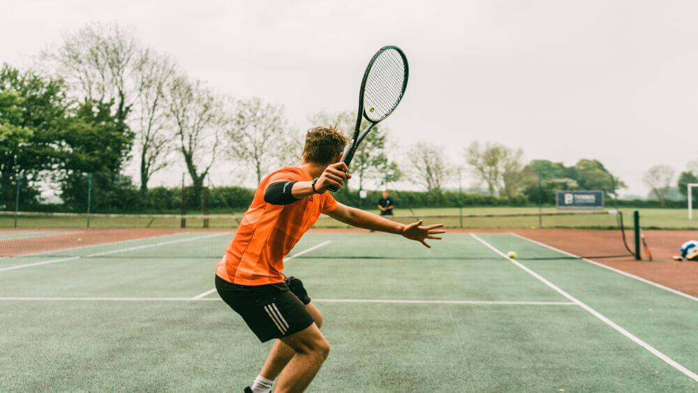

First things first, what is tennis?
Tennis is a sport played on 3 different surfaces (hard, clay, grass) where you have a rectangle divided by a net, with a racquet and a tennis ball (yellow green-ish small ball). The game can be played by a minimum of two and a maximum of four players inside the court. The goal of Tennis is to make more points than your opponent, this happens when you cross the ball over the net with your racquet and the opponent is not able to cross the ball back. The points of the game are counted as the player that wins 2 sets first, each set made of 6 games, and each game has 4 points - depending on the tournament this can change, but this is the base of it. This is pretty much the core of tennis.
It's important to say that tennis is a classic and refined sport, different from other games, you cheer your favorite player throughout the match but between the points, the crowd must be silent. Another interesting thing about tennis is that different from other sports where you cheer for a team, sometimes the one from your city or country, in tennis you cheer for a specific player (or more than one, of course).
